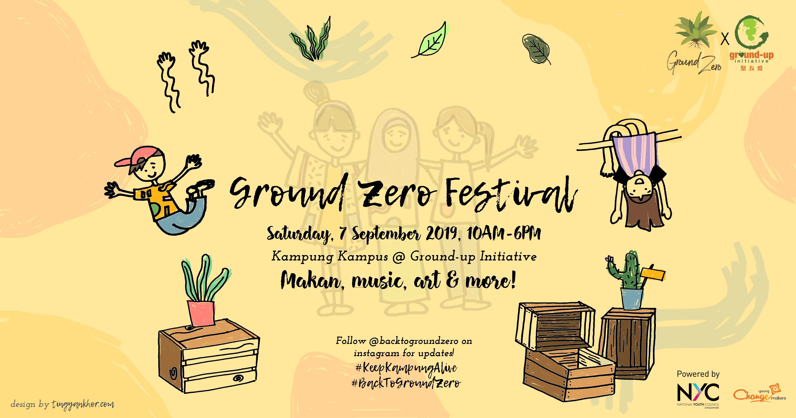

Ground Zero Festival (2019)
Partners: Ground-Up Initiative (GUI), National Youth Council Singapore (NYCSG)

The aim of the festival was to shift the focus from consumption to experience through a Kampung-based Festival.
The event was filled with experience-based activities such as an art exhibition using upcycled materials to showcase multiple aspects of environmentalism, musical performances by local talent (e.g., Shelby Wang, Vivien Yap, and Valiantes), wellness and upcycling classes, as well as a marketplace selling plant-based food and key products.
Prior to the big day, we held a pre-Festival session for participating vendors to network and brainstorm for future collaborations.
The purpose of this session was to contribute to building an ecosystem where larger organisations and smaller start-ups share and learn from each other to strengthen the ground-up sustainability movement in Singapore.
Folks from companies such as barePack and The Capture App, among others, attended the session. We also screened the film "Ubin, Sayang" by Rachel Quek, which traces the journey of Xiao Ting as she learns from the stories of mangrove restoration and Kampung living.
The festival was funded by the National Youth Council under the Young ChangeMakers (YCM) grant.
For a prevuew of the Festival, check out our Festival film by Cheekiemonsta Media:
Also featured at:
Powered by: National Youth Council Singapore
All artwork by Ting Yan